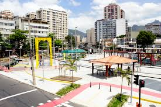
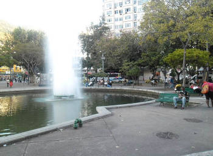
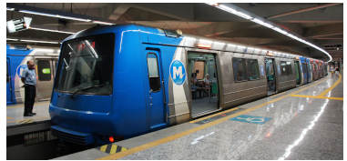
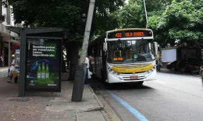
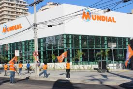
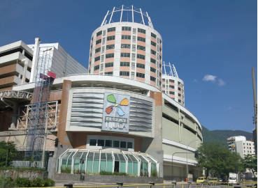
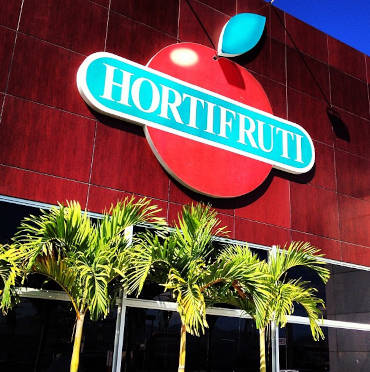

Bem vindo!
A Nico's House é uma república mista situada
na zona norte do Rio de Janeiro, na Tijuca.
O projeto deu seu start em meados de 2000,
ao receber nosso primeiro hóspede,
que logo repassou a ideia para terceiros e com isso
, a republica acabou se expandindo e consequentemente
necessitando e recebendo melhorias como;
gestão, capacidade, atenção, qualidade e comodidade.
no coração da Tijuca! Próximo à Praça Varnhagem  (área bohemia da Tijuca), Praça Sães Peña  , Metrô  e principais pontos de ônibus  ). Diversas outras facilidades aos redores como Supermercado Mundial  , Shopping Tijuca  , Hortifruti  (dos grandes e dos pequenos, rs) farmácias (todas que você imaginar, mano), bancos e outras! Clique no mapa e dê um confere você mesme!